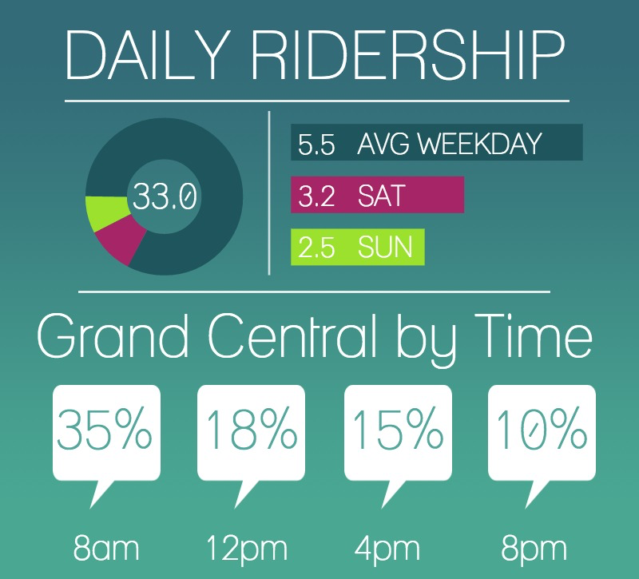
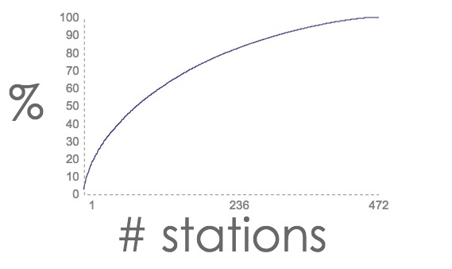
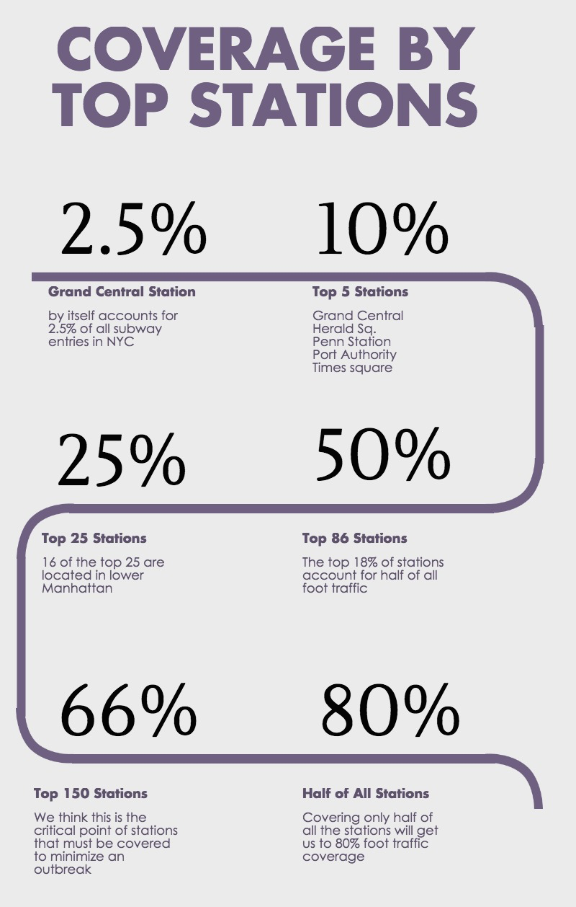
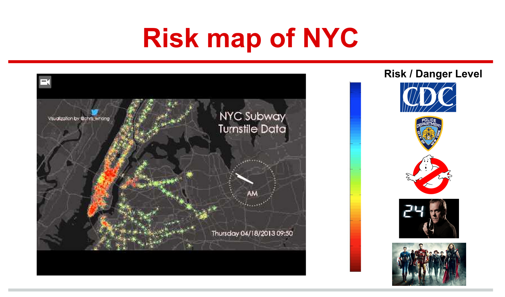

Project 1 - Benson
Over the last 3 days, my group and I finished our first project. In this project, we created a client proposal for a problem that we fabricated: an upcoming zombie apocalypse.
Our instructors had told us that projects that really pushed the envelope were the ones that impressed, so we thought what better way than to fabricate the need for MTA turnstile data analytics for an upcoming Zombie Apocalypse.
Step 1: Create Problem
Our first step was to create the situation. And we thought what better way than to revive an old villain that really struck fear into people's hearts.
 Yes, that's right, Dr. Evil. And he's back for a forth installment, except this time with a new twist. He is planning to infect the NYC Subway with a biological agent that will not only kill people, but turn them into Homo Necrosis Zombifis, aka: zombies. So the CDC and the FBI have called upon our data company, Apocalyptics (we specialize in Data Science for global scale crises), to see if we can provide data that will help them to mobilize staff, police and troops to help neutralize a potential outbreak.
Yes, that's right, Dr. Evil. And he's back for a forth installment, except this time with a new twist. He is planning to infect the NYC Subway with a biological agent that will not only kill people, but turn them into Homo Necrosis Zombifis, aka: zombies. So the CDC and the FBI have called upon our data company, Apocalyptics (we specialize in Data Science for global scale crises), to see if we can provide data that will help them to mobilize staff, police and troops to help neutralize a potential outbreak.
Step 2: Analyze Data
Apocalyptics now must quickly find some data (MTA Turnstile data) that will allow us to help figure out high risk areas for the virus to spread. There are some obvious ways to do this, and the first one is to just get a raw reading of subway ridership totals. We can split this up into weekdays, weekends and time of day. (*all figures in millions unles otherwise specified)

But this is a bit too generic, so we thought we would give a coverage statistic. How many stations, out of the 468 MTA subway stops, need to be guarded to get a majority of people.
 With this data, we were able to make come up with these figures:

With our limited time (less than 2 days), we weren't able to be much more specific. But with this data we had, we told our potential clients that with access to some more resources, we would be able to deliver a real time analysis of which stations (based on geography) should be manned at which time to minimize the threat to NYC and the rest of the world. And for fun, we created one more chart.. this one as a potential risk level classification system...

Step 3: Mistakes
Hindsight is 20/20 and that was definitely the case here. Though unfortunately one of the members of our group had to leave the program the day before the project was due, we were still able to come up with a presentation that I believe was well put together. But if we had to do it together, I think we would do some things differently. I would want to find data that could lead to very practical suggestions right away. One calculation we could have computed was a likelihood index of where Dr. Evil might release the pathogen for maximum effect. Another would have been imposing the data we did collect onto a map of NYC.
Step 4: Final Thoughts
Because it was the first project and we had limited time, I'll show myself some grace. Overall, I think our group did a great job and above all I think we were incredibly creative when it came to coming up with a topic and presentation that was able to keep people's attention and put a smile on people's faces after a long first week at Metis :P